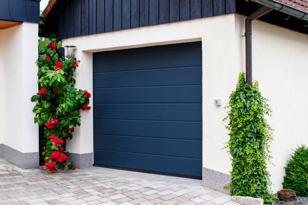

Augusta Georgia
info@ohmykitchen.pro
Augusta Georgia
info@ohmykitchen.pro

Upgrade your home in Augusta Georgia with custom countertops. Choose from granite, quartz, and marble. Expert craftsmanship, affordable pricing, and guaranteed satisfaction for every project.
Click Here To Call Us (877) 848-1711If you’re looking for premium countertops in Augusta Georgia our company specializes in providing high-quality, stylish, and durable solutions to elevate your home or business. Countertops are more than just functional surfaces – they are a key design element that adds value and sophistication to any space.
We offer a wide variety of countertop materials, including granite, quartz, marble, and laminate, catering to both traditional and modern tastes. Our team works closely with you to choose the perfect material, color, and finish to suit your unique style and requirements. Whether you’re updating your kitchen, remodeling a bathroom, or upgrading your commercial space, we deliver countertops that combine beauty with long-lasting performance.
What sets us apart is our commitment to customer satisfaction and precision craftsmanship. We use advanced technology to measure and fabricate countertops, ensuring a flawless fit every time. Our installation experts in Augusta Georgia take care of every detail, from start to finish, to guarantee seamless results.
Transform your space with countertops that blend elegance, durability, and functionality. Contact us today to schedule a consultation and discover why we’re the trusted choice for countertop solutions in Augusta Georgia . Let us help you turn your vision into reality!
Residential & commercial Countertops
Quality services at affordable prices
Immediate 24/ 7 emergency services


Choosing the right countertop for your kitchen or bathroom in Augusta Georgia is a crucial decision that affects both the functionality and aesthetic of your space. With a wide variety of materials available, it's essential to understand your options to make an informed choice.
Consider Durability and Maintenance: For high-traffic areas like kitchens, granite and quartz countertops are popular due to their durability and low-maintenance qualities. If you're looking for something more eco-friendly, consider recycled materials or bamboo. For bathrooms, materials like marble or engineered stone provide both elegance and resilience to moisture.
Aesthetic Appeal: Your countertop should complement the overall design of your kitchen or bathroom. Light-colored granite or quartz can brighten up a space, while dark tones offer a sleek, modern look. Be sure to consider your cabinet and flooring choices to create a cohesive design that enhances your home's style.
Budget and Installation: The cost of materials can vary widely, so understanding your budget is key. While natural stone may be more expensive, engineered options like laminate or solid surface countertops can offer a more affordable alternative. Be sure to also factor in installation costs when budgeting for your countertop.
Consult a Professional: Choosing the right countertop requires careful thought and expertise. For the best results in Augusta Georgia consult with a local professional who can help you select and install the perfect countertop for your kitchen or bathroom needs.
Residential & commercial Countertops
Quality services at affordable prices
Immediate 24/ 7 emergency services
Elevate your home bar experience with stylish and functional countertops designed for entertaining. Our countertop installation service for home bars focuses on aesthetics and practicality, ensuring your bar is a space where you can host and enjoy gatherings comfortably. From sleek quartz to warm butcher block, we offer materials that complement your home decor while being durable enough for everyday use.
Choosing us means you get a dedicated team that appreciates how important your home bar is to your entertainment space. We help you select the right materials and design options that meet both your style and functionality needs. Our experienced installers ensure that every detail is perfect, resulting in a stunning home bar countertop. Impress your guests and enhance your hosting capabilities with our expert installation services for home bars .

As sustainability becomes increasingly important in home design, our eco-friendly countertop options cater to environmentally conscious homeowners. We offer a selection of sustainable materials, including recycled glass, bamboo, and reclaimed wood, ensuring that your countertops reflect your values without compromising on style or performance.
Our team is committed to helping you select the best eco-friendly materials that fit your design needs. We believe that you shouldn’t have to sacrifice beauty for sustainability. Our eco-friendly countertops can be customized in various colors and finishes, making them a beautiful addition to any room in your home.
Installation of eco-friendly countertops requires the same level of expertise as traditional materials, and our skilled team is dedicated to ensuring every installation meets the highest standards of quality and craftsmanship.
Choose our eco-friendly countertops and enjoy the peace of mind that comes from making sustainable choices for your home. You'll contribute to a healthier planet while enjoying beautiful, functional surfaces designed for modern living.

Experience the pinnacle of luxury with our high-end countertop installation services for discerning homeowners in Augusta Georgia . When only the best will do, our selection of premium materials will elevate your kitchen or bathroom to unparalleled heights.
What makes us the best choice for luxury installations? We specialize in exotic stones, high-quality quartz, and bespoke materials, ensuring you have access to the finest selections available. Our expert craftsmen handle every step of the installation process with precision and detail, creating stunning surfaces that are both practical and luxurious. With our focus on exceptional customer service, we guide you throughout the entire project, ensuring satisfaction at every stage. Create a lavish space that reflects your personal style with our luxury countertop solutions!

For businesses demanding durability, functionality, and aesthetic appeal, our commercial kitchen countertop installation services are tailored to meet the highest standards. We recognize that commercial kitchens require surfaces that can withstand heavy use while maintaining a professional appearance.
Our selection of commercial-grade materials includes stainless steel, solid surface, and high-quality stone, offering the resilience needed for high-traffic environments. Our team works collaboratively with you to design and install countertops that maximize workspace while fitting your aesthetic needs.
Whether in restaurants, catering businesses, or food production facilities, our expert installation ensures that your countertops can handle the rigors of daily commercial use. We also offer maintenance support to keep your countertops looking pristine and functioning efficiently.
Investing in our commercial kitchen countertop installation means selecting a partner who understands the unique demands of your industry and is committed to delivering outstanding results that enhance your business operations.

Elevate your retail space with our custom countertop installation services . Countertops in retail environments not only need to be functional but also need to attract customers and complement your brand's identity. Our team specializes in creating visually appealing and practical countertop solutions tailored to retail settings.
We offer a variety of materials that combine form with function, including laminate, solid surface, and concrete. Each material can be customized in terms of color, texture, and edge design, allowing you to create a unique atmosphere that resonates with your brand.
Our experienced installers ensure that each countertop fits perfectly within your space while adhering to the highest standards of quality and craftsmanship. By focusing on aesthetics and durability, we aim to enhance the overall shopping experience for your customers.
With our retail store countertop solutions, you’re making a valuable investment in your business's presentation and functionality. Trust us to help you create an inviting and stylish retail environment that draws in customers.
The hospitality industry demands elegance and durability, and our hotel and restaurant countertop solutions in Augusta Georgia provide the perfect combination of both. We understand that the countertops in these environments need to make a lasting impression while also standing up to daily wear and tear.
Our team specializes in a range of high-quality materials tailored to suit restaurants, bars, and hotel lobbies. From sophisticated granite and marble to resilient solid surface options, we have the expertise to install countertops that align with your brand’s aesthetic and functional needs.
We work closely with architects and designers to create customized solutions that enhance the overall ambiance of your space. Our meticulous installation process ensures that your countertops are not only visually stunning but also meet the operational demands of a busy environment.
Invest in our hotel and restaurant countertop solutions for a sophisticated and functional space that leaves a lasting impression on your guests. Experience our commitment to quality and customer service firsthand.

In modern offices, the right countertops contribute to both functionality and style. Our office countertop installation services in Augusta Georgia cater to businesses looking for durable and aesthetically pleasing solutions that support a productive work environment.
Why are we the best choice for office countertops? We specialize in materials that are not only attractive but also resilient, suitable for heavy use in an office setting. Our team works with you to understand your specific needs, providing tailored solutions that fit your brand and office design. We prioritize efficient installation to minimize disruption during your business operations. Let us enhance your office with stylish countertops that promote productivity and professionalism!

In medical and laboratory environments, reliability and cleanliness are of utmost importance. Our countertops for medical and laboratory settings are designed to meet rigorous standards of hygiene while being durable enough to withstand heavy use. We offer a variety of surfaces that are non-porous, easy to clean, and resistant to chemicals and stains.
What makes our service exceptional? We focus on safety and compliance, ensuring our materials align with health standards and regulations. Our knowledgeable team understands the specific requirements of medical and laboratory settings, recommending countertops that maintain a sterile environment. Choose us for your medical and laboratory countertop needs and ensure a safe and efficient workspace for professionals and patients alike.
Years Experience
Expert Technicians
Satisfied Clients
Compleate Projects
When it comes to selecting the perfect countertops for your home or business in Augusta Georgia ohmy kitchen stands out as the trusted choice. We specialize in offering a vast selection of high-quality countertops, designed to enhance the beauty and functionality of any space. Whether you're renovating your kitchen, bathroom, or office, our team delivers exceptional results tailored to your needs.
At ohmy kitchen, we take pride in providing personalized service from start to finish. Our experienced design consultants work closely with you to understand your style, preferences, and budget, ensuring you find the ideal countertops that complement your vision. We offer a wide variety of materials, including granite, quartz, marble, and more, each offering unique features and benefits.
What sets us apart is our commitment to quality craftsmanship. Every countertop installation is performed by skilled professionals who ensure a flawless finish and long-lasting durability. We only use premium materials, so you can be confident that your investment will stand the test of time.
In addition to our unmatched selection and craftsmanship, ohmy kitchen offers competitive pricing and timely delivery, ensuring your project is completed efficiently and within budget. Our customer-centric approach means we go the extra mile to exceed your expectations.
Choose ohmy kitchen for your countertop needs in Augusta Georgia and experience superior quality, personalized service, and exceptional value. Let us transform your space with countertops that combine style and durability.
When it comes to durability and timeless beauty, granite countertops stand unmatched. Granite is a natural stone that not only enhances the aesthetic appeal of your kitchen or bathroom but also ensures longevity and resilience against wear and tear. our granite countertop installation service provides a seamless blend of functionality and style, making it a top choice for homeowners looking to elevate their spaces.
Choosing our services means partnering with experts who have extensive experience in granite countertop installation. Our team understands the nuances of working with natural stone, ensuring precision in every cut and placement. We source high-quality granite slabs from trusted suppliers to guarantee that you receive only the best material for your home. Each installation is customized to fit your unique kitchen or bathroom layout, reflecting your personal style and preferences.
Moreover, our commitment to customer satisfaction ensures that we guide you through the entire process, from selecting the right granite to the final installation. With us, you not only get a beautiful granite countertop but also a reliable and stress-free experience.
Quartz countertops have become synonymous with elegant and functional surfaces in kitchens and bathrooms alike. Combining the beauty of natural stone with engineered reliability, they offer a non-porous, scratch-resistant surface that’s perfect for busy households. Our quartz countertop installation services ensure you get premium materials and expert craftsmanship tailored to your style.
What makes us the best choice for your quartz needs? We offer a vast array of colors and finishes, allowing you to personalize your space effortlessly. Our team takes pride in their attention to detail, ensuring precise installation that fits perfectly. Furthermore, we provide ongoing support and maintenance tips to keep your quartz countertops looking brand new. Choosing us means choosing quality, durability, and style—your satisfaction is our priority!
Marble countertops evoke sophistication and luxury. If you are contemplating a marble countertop installation our team is here to guide you through the process. Marble offers unparalleled beauty with its unique veining and color variations. Perfect for kitchens and bathrooms alike, marble adds a touch of class and elegance that few materials can match.
Choosing us means choosing expertise and quality. We specialize in the intricacies of marble installation, ensuring every slab is aligned perfectly and finished to your specifications. Our extensive experience means you can rely on us to avoid common pitfalls associated with marble as a material, such as seaming and finishing. We are dedicated to delivering exceptional results that will enhance the beauty of your space for years to come. Discover the timeless appeal of marble countertops with our professional installation services.
Butcher block countertops provide a warm, inviting aesthetic while offering functionality and robustness. Ideal for kitchens and entertainment areas, they are perfect for cooking enthusiasts and families alike. Our butcher block countertop installation services combine the traditional charm with modern performance, making us your ideal partner for this type of project.
Why are we the best at what we do? Our team specializes in various types of wood and finishes, allowing you complete customization of your butcher block countertops. We understand that installation quality is crucial for durability, which is why we use the finest techniques and products. We also offer guidance on care and maintenance to extend the life of your countertops. Choose us for your butcher block installation, and experience the perfect blend of beauty, functionality, and craftsmanship!
For affordable and versatile countertop options, our laminate countertop installation service in Augusta Georgia is a popular choice among homeowners. Laminate countertops have evolved significantly, now offering a range of colors, textures, and patterns that replicate natural stone at a fraction of the cost.
Choosing laminate countertops means you don’t have to compromise on style for budget. Our team provides expert laminate installation that ensures a flawless finish. We take pride in our craftsmanship, ensuring that each countertop is not only beautifully designed but also fitted perfectly for your space.
Laminate countertops are also low-maintenance and resistant to moisture, making them ideal for kitchens and bathrooms alike. With our expert guidance, you can select the perfect laminate design that fits your lifestyle and enhances your home. From installation to maintenance tips, we are here to ensure your experience is exceptional and your new countertops serve you well for years to come.
Discover the seamless beauty of solid surface countertops with our expert installation services . Solid surface materials like Corian and LG Hi-Macs are designed to provide a modern, cohesive look in any kitchen or bathroom. Their non-porous nature makes them easy to clean and maintain, while also offering endless customization options.
Our team specializes in solid surface countertop installation, guaranteeing a perfect fit and impeccable craftsmanship. The flexibility of solid surface materials means we can create custom shapes and sizes to suit your needs, including integrated sinks and backsplashes that enhance the overall design.
We pride ourselves on our customer-centered approach, guiding you through the selection process to find the ideal style and color that complements your home. Not only do our solid surface countertops offer exceptional design possibilities, but they’re also durable and built to last. With proper care, they’ll maintain their beauty for years, making them a smart investment for your home.
For homeowners who desire an industrial chic flair, concrete countertops are a fantastic option. They offer an array of finishes, colors, and textures that can be customized to fit any aesthetic. Our concrete countertop installation services allow you to harness the creative potential of concrete, transforming your kitchen or bath into a freestyle design.
Our team of experts specializes in crafting bespoke concrete solutions, ensuring that your countertops not only meet but exceed your expectations. We utilize high-grade materials and innovative techniques to deliver durable and visually appealing results that stand the test of time.
Why choose us for your concrete countertop installation? We are dedicated to client satisfaction through personalized service and quality workmanship. Our skilled artisans understand the nuances of concrete and work meticulously to create a finished product that enhances your space’s uniqueness.
For environmentally conscious homeowners, recycled glass countertops offer a unique blend of sustainability and style. With sparkling aesthetics and a commitment to eco-friendliness, these countertops can transform any space into a modern masterpiece. Our recycled glass countertop installation services in Augusta Georgia are designed to provide a stunning, sustainable solution for your kitchen or bathroom.
Why choose our services? We specialize in high-quality recycled glass products that are both durable and visually appealing. Our team is dedicated to providing professional installation, ensuring that your new countertops are both functional and beautiful. Plus, we can guide you on the best design choices that complement your existing décor while showcasing your commitment to sustainability. Experience the perfect harmony of style and sensitivity to the environment with our stunning recycled glass countertops!
Elevate your home with our custom countertop design and fabrication services in Augusta Georgia . We understand that every space is unique, and our team is dedicated to providing countertop solutions that are tailored to your specific needs and preferences.
Our design process begins with a consultation where we discuss your vision, style, and functional requirements. Whether you’re looking for a luxurious marble countertop or a practical laminate surface, we’ll work with you to select the best materials and designs.
With our expert fabrication techniques, we ensure that each countertop is crafted to perfection. That means precise measurements, clean cuts, and impeccable finishes. Our team is skilled in working with a variety of materials, from natural stones to man-made surfaces, giving you the freedom to truly customize your countertops. When you choose us for custom countertops, you not only receive a beautiful product but also a seamless experience from design to installation.
If your current countertops are showing signs of wear and tear or simply no longer match your style, our countertop replacement services in Augusta Georgia are here to help. Upgrading your countertops can significantly enhance the look and functionality of your kitchen or bathroom, increasing your home's value in the process.
Our replacement process begins with a thorough assessment of your existing countertops. We work closely with you to choose the perfect new material, taking into consideration aesthetics, durability, and budget. From granite to laminate, we have a wide selection of high-quality materials available to suit every homeowner's style and preference.
Our experienced installers ensure a smooth removal of your old countertops and a seamless installation of your new ones. We pride ourselves on our attention to detail and commitment to customer satisfaction. Once your replacement is complete, we provide care and maintenance tips to help keep your new countertops looking beautiful for years to come. Trust us to transform your space with stunning new countertops that reflect your taste and enhance your home’s overall appeal.
An outdoor kitchen is an extension of your home, and having the right countertops can make all the difference. Our outdoor kitchen countertop installation services focus on providing durable, weather-resistant surfaces that maintain their beauty year-round.
Whether you prefer granite, concrete, or another material, we’ll help you design a functional outdoor workspace that is both attractive and practical. Our team understands the unique challenges of outdoor installations, ensuring that your countertops can withstand the elements while providing a stunning area for food preparation and entertaining.
Opting for our services means working with professionals who prioritize quality and durability. We take pride in our craftsmanship, using high-quality materials that guarantee longevity. Furthermore, we are committed to ensuring your outdoor kitchen is a welcoming space for family and friends, enhancing your outdoor living experience.
The kitchen island is the heart of any modern kitchen, and it deserves the best countertops. Our kitchen island countertop installation service in Augusta Georgia focuses on providing aesthetically pleasing, durable, and functional surfaces. From preparing meals to casual dining, we understand that kitchen islands serve multiple purposes, and so should your countertops.
Our experience and knowledge allow us to help you select the right material that not only complements your kitchen's design but also meets your daily functional requirements. We pride ourselves on our craftsmanship, ensuring that each countertop is installed with care and precision. Our team collaborates with you to create a kitchen island that becomes the focal point of your culinary space. Transform your kitchen with our premium kitchen island countertop installation services .
Transform your bathroom into a luxurious retreat with our stylish bathroom countertop installation services . We offer a range of materials to enhance the elegance and functionality of your bathroom space.
Why are we the best option for your bathroom countertops? Our expert team understands the unique challenges of bathroom renovations, from moisture resistance to durability. We help you choose the best material, whether it’s elegant marble, functional quartz, or beautiful solid surface, to meet your specific needs. We are committed to excellent craftsmanship and customer service, ensuring a hassle-free installation process. Elevate your bathroom’s style and utility with our premium countertop options!
The edge design of your countertops can significantly impact the overall look and feel of your space. Our countertop edge design and customization services in Augusta Georgia provide you with the opportunity to choose from a variety of edge styles that suit your taste.
Why choose us for your edge design? Our skilled team offers a wide range of customization options, from classic straight edges to more elaborate profiles like bullnose or waterfall designs. We understand that the finishing touches matter, and we pay close attention to detail to ensure your countertops look flawless. Whether you prefer a modern aesthetic or a traditional design, we can help you achieve your desired look while maintaining the highest quality. Let us assist you in creating unique and stunning edges that enhance your countertops!
Breathe new life into your old countertops with our professional countertop resurfacing services in Augusta Georgia . This cost-effective solution can significantly enhance the appearance and durability of your surfaces without the need for complete replacement.
Why choose our resurfacing services? Our experienced team specializes in a variety of materials, allowing us to resurface your countertops to look as good as new. We utilize high-quality materials and advanced techniques to ensure a flawless finish, extending the lifespan of your surfaces. Our resurfacing service is quick, efficient, and designed to minimize disruption in your home while providing superb results. Trust us to revitalize your countertops with our exceptional resurfacing solutions!
Over time, countertops can develop minor damage, such as scratches, chips, or stains that detract from their appearance. Our countertop repair and restoration services in Augusta Georgia address these issues, bringing your surfaces back to life and restoring their beauty and functionality.
Our skilled technicians are trained in a variety of repair techniques tailored to different materials, from solid surface to granite and quartz. We take a comprehensive approach to assessing and addressing any damage, ensuring that repairs are seamless and long-lasting.
Why trust us for your countertop repair needs? We understand the importance of maintaining your investment, and our commitment to quality means that we use the best materials and techniques for all repairs. Our focus on customer service ensures that you are kept informed throughout the process, resulting in a restored surface that meets your expectations.
Proper sealing and maintenance are essential for preserving the beauty and integrity of your stone countertops. Our sealing and maintenance services are designed to ensure your natural stone surfaces, such as granite or marble, remain stunning for years to come.
We use high-quality sealers that provide effective protection against stains and moisture, helping to maintain your countertops' appearance while extending their lifespan. Our trained technicians apply sealers with precision, ensuring that every inch of your surface is protected.
In addition to sealing, we offer comprehensive maintenance services, including cleaning and polishing that can refresh your countertops’ luster. We believe in educating our customers about the best practices for caring for stone surfaces to ensure they continue to look their best without compromising on performance.
By choosing our sealing and maintenance services, you’re making a smart investment in your home. Protect your countertops with our professional care, ensuring they remain beautiful and functional for years to come.
When it comes to choosing the perfect countertops for your kitchen or bathroom in Augusta Georgia granite, quartz, and marble offer unparalleled beauty and functionality. These natural stone options not only elevate the aesthetic appeal of your space but also provide long-lasting durability, making them ideal choices for homeowners seeking a combination of elegance and practicality.
Granite Countertops: Known for its strength and resistance to scratches, heat, and stains, granite is a top choice in Augusta Georgia for both kitchen and bathroom spaces. Its unique patterns and color variations make each slab a one-of-a-kind addition to your home, enhancing its value and beauty.
Quartz Countertops: If you're looking for a low-maintenance option, quartz is the perfect choice. Made from engineered stone, quartz countertops are non-porous, which helps prevent the growth of bacteria and stains. Available in a wide range of colors and finishes, quartz offers both style and practicality for modern homes in Augusta Georgia .
Marble Countertops: For a luxurious, timeless look, marble countertops are unmatched. Known for their classic appearance and cool surface, marble countertops add sophistication to any space. While they may require more maintenance, the elegance of marble makes it a popular choice in upscale homes throughout Augusta Georgia .
No matter your style preference, granite, quartz, and marble countertops are all exceptional choices for enhancing your home’s aesthetic and functionality in Augusta Georgia . Consider these materials for a lasting investment that blends beauty, durability, and style.
Augusta (/əˈɡʌstə/ ə-GUSS-tə) is a consolidated city-county on the central eastern border of the U.S. state of Georgia. The city lies directly across the Savannah River from North Augusta, South Carolina at the head of its navigable portion. Georgia's third most populous city (after Atlanta and Columbus), Augusta is located in the Fall Line section of the state.
Our experts at OhMy Kitchen will help you choose the best material based on durability, aesthetics, and maintenance needs specific to your kitchen .
We offer a warranty on all our countertops, ensuring peace of mind for our customers in Augusta Georgia with long-lasting quality.
Yes, OhMy Kitchen offers free consultations where we discuss your countertop needs, style preferences, and budget.
Our professionals at OhMy Kitchen will assess your space, check for necessary preparations, and ensure your kitchen is ready for a smooth countertop installation .
Yes, many of our countertop materials, such as quartz and granite, are highly resistant to stains, ensuring long-lasting beauty for your kitchen in Augusta Georgia .
The cost of countertops varies depending on the material, size, and complexity. Contact OhMy Kitchen in Augusta Georgia for a personalized quote.
Yes, at OhMy Kitchen, we offer countertops in multiple thickness options, from sleek and modern thin profiles to thicker, more substantial options.
Use cutting boards and trivets to prevent scratches. Our experts at OhMy Kitchen can recommend the best protective methods for your countertop material.
Marble countertops require a little extra care, such as regular sealing and avoiding acidic cleaners. Our team can guide you on proper care for your marble countertops in Augusta Georgia .
Maintenance varies by material, but regular cleaning with gentle products is recommended. Our team at OhMy Kitchen can provide specific care instructions for your countertops .
Yes! OhMy Kitchen offers a variety of modern countertop styles, including sleek quartz and polished granite, perfect for contemporary homes in Augusta Georgia .
Yes, we offer sustainable and eco-friendly countertop options like recycled glass and bamboo to customers .
In some cases, installing new countertops over existing ones is possible. Our team at OhMy Kitchen can assess your current countertops and recommend the best approach for your project .
Yes, OhMy Kitchen provides countertop samples for you to view in person at our showroom or by scheduling a visit .
Typically, countertop installation by OhMy Kitchen in Augusta Georgia takes 1-3 days, depending on the material and size of your project.
Yes, certain materials, like quartz, are non-porous and resistant to mold and bacteria, ensuring a clean and healthy kitchen environment .
Simply contact OhMy Kitchen through our website or give us a call, and we will provide a detailed, no-obligation quote for your countertop project .
Yes, OhMy Kitchen offers countertop resurfacing services restoring your countertops to like-new condition without a full replacement.
For small kitchens, lighter-colored materials like quartz or light granite can create an illusion of space and brightness, making them ideal for your Augusta Georgia home.
Absolutely! At OhMy Kitchen, we can create custom-shaped countertops to fit your kitchen's unique layout and style .
At OhMy Kitchen, we offer a wide range of countertops, including granite, quartz, marble, and more, to suit every style and budget .
Many of our materials, such as granite and quartz, are highly heat resistant, making them perfect for cooking environments in Augusta Georgia .
Yes, OhMy Kitchen provides fully customizable countertops allowing you to select the perfect size, color, and finish for your kitchen.
For outdoor kitchens we recommend granite or quartzite due to their durability and resistance to the elements.
Absolutely! OhMy Kitchen offers professional countertop installation services throughout Augusta Georgia to ensure a perfect fit and finish.
Yes, OhMy Kitchen offers countertop replacement services throughout Augusta Georgia helping you upgrade to more durable or stylish options.
We offer a wide variety of colors, from classic whites and blacks to vibrant reds and blues, to suit every design preference .
If your countertop is damaged, contact OhMy Kitchen in Augusta Georgia immediately, and we will help assess the damage and provide repair or replacement options.
Yes, OhMy Kitchen offers countertop repair services helping restore your surfaces to their original condition.
Granite countertops offer durability, resistance to heat and scratches, and a timeless aesthetic, making them a top choice for homeowners .
ohmy kitchen was exceptional from start to finish. The quality of my new countertops is outstanding, and the team was a pleasure to work with. Highly recommended in Augusta Georgia !
Profession
Thank you, ohmy kitchen, for my beautiful countertops! The service was exceptional, and the finished product looks amazing. Great experience in Augusta Georgia !
Profession
ohmy kitchen did a fantastic job installing my new countertops. The quality is unmatched, and the installation was flawless. Great service in Augusta Georgia !
Profession
Augusta GA Countertops Pros
(877) 848-1711
info@ohmykitchen.pro
09.00 AM - 09.00 PM
09.00 AM - 12.00 PM